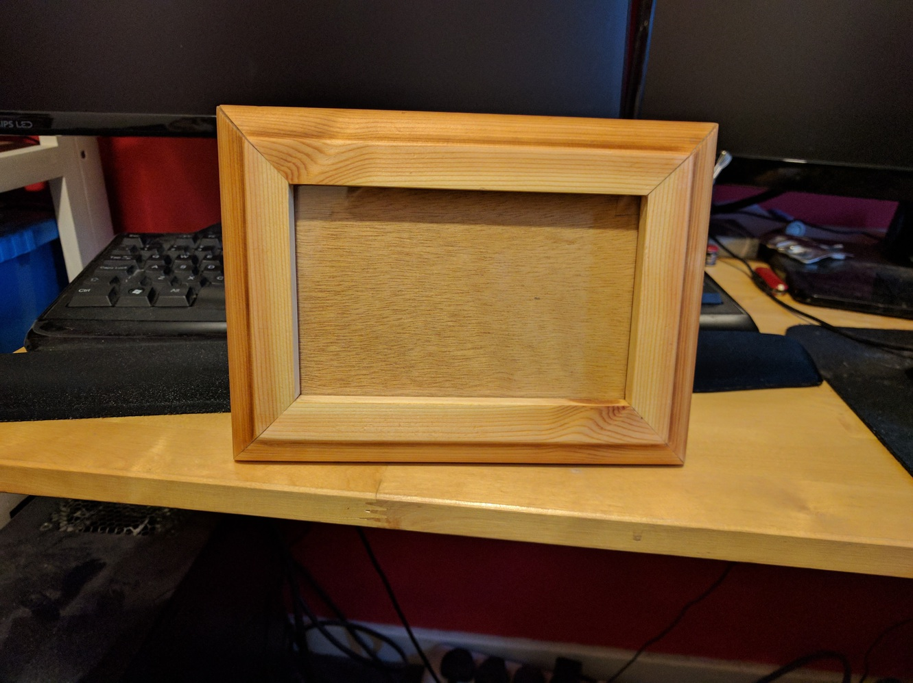

A picture frame I built for a friend. Made using a wardrobe he gave me to salvage wood from.
Completed on 31/03/2017.
I got all the wood for the frame by ripping this section from the base of the wardrobe.
The most boring part of the project was sanding all the finish of, sanding concave curves isn't fun.
I cut the mitres using the crappy mitre guage that came with my table saw. If I was doing this again I'd build a mitre sled.
Each piece had a rebate cut on the table saw for the "glass" pane and backing board.
Here's how I glued the mitres together, masking tape and an F clamp to keep them aligned. Can you see the mistake yet?
Yeah that was a bit dumb.
It was a lot easier than I'd like to pull apart that end grain to end grain glue joint. I expect if this frame gets dropped it'll just pop apart.
After that happy little accident I glued the pieces on one by one to make sure I made a square this time.
It's a bit gappy, this is why I'd built a mitre sled for future projects.
I filled the gaps in with a wood glue and sawdust mixture.
Finished with three coats of boiled linseed oil.
The gaps are still a bit too obvious for my liking.
Two little tabs are screwed on just loose enough that you can still turn them by hand to hold the backboard and a sheet of perspex in. The frame stands on two feet made of dowels and chunks of wood which can be moved to make the frame portrait or landscape.
{kind=link}
{kind=link}
{kind=link}
{kind=link}
{kind=link}
{kind=link}
{kind=link}
{kind=link}
{kind=link}
{kind=link}
{kind=link}
{kind=link}
{kind=link}
{kind=link}